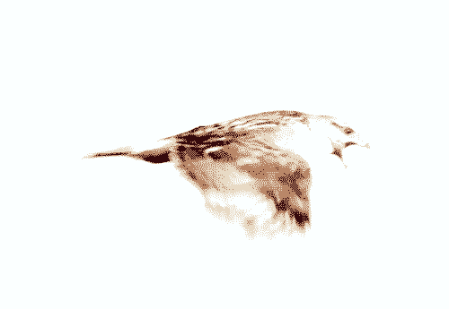

This website launched and will be taken offline later today, July 18, 2024. On the occasion of the Ultralight Publication Launch, this ultralight website (110KB) celebrates the ephemeral moment of first flight.
It is inspired by the current microseason,
Young hawks learn to fly
鷹乃学習
July 17–22